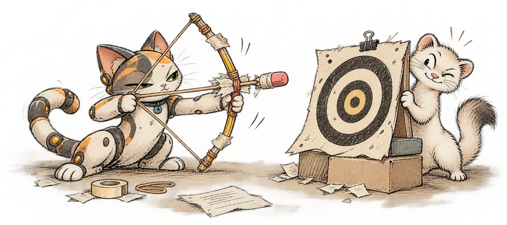
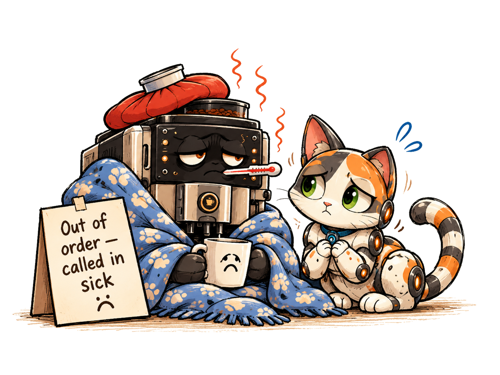

We will read and write basic HTML elements so that a browser can turn our written code into an understandable webpage for real readers.

Priority TEKS — In Our Words
§127.672(d)(2)(C) — We will learn how webpage code creates content a browser can display, preparing us to create and publish our own webpages.
Warm-Up · Finding information online
A neighborhood website has a heading, some news, and a list of places to find help. A visitor opens it for the first time and wants to know what the group does.
Learn 1 · The three pieces of an HTML element
Compare the code a developer types with the page a visitor actually sees. The tags identify the type of content; the browser shows the words.
Notice: The visitor does not see the angle brackets. HTML stands for HyperText Markup Language. It organizes content into headings, paragraphs, pictures, and links.
The story behind the tags
In 1991, scientists at CERN needed to share research across different computers. Tim Berners-Lee helped create the World Wide Web, where documents could link to one another. The Internet already existed; the Web was a new way to use it. Early webpages were mostly text and links. HTML gave the information structure, while browsers turned that structure into readable pages.
As the Web spread around the world, people needed pages for many languages, scripts, and screen sizes. Later, CSS made it much easier to control colors and layouts without changing the meaning of HTML. You are practicing the same building blocks used in modern sites.
Wonder: Why might a researcher have preferred linked documents over mailing a separate copy to everyone?
A typical HTML element has an opening tag, the content, and a closing tag. The closing tag includes a slash (/) to show where that element ends.
Source with three parts
<p>Hello, neighbors!</p>
<p> starts a paragraph.
Hello, neighbors! is its content.
</p> ends it.
Rendered result
Hello, neighbors!
<h1> creates a main heading; <p> creates a paragraph.
Inside an HTML file, the <body> and </body> tags enclose the content most visitors see. Your iCEV starter already includes these.
Question 1 · Predict the browser view
A developer types <h1>Welcome</h1> above <p>We serve our neighbors.</p>. Without running the code, describe what a visitor will see and which part will look like a heading.
Saved on this device as you type when browser storage is available.
Extra Help
Find the text between each opening and closing tag. Think about how a heading differs from a paragraph in the Warm-Up example.
Tiny Practice · Predict, then preview
Look at <p>We can learn by testing.</p>. Predict how it will look on a webpage. Then, in the iCEV HTML tab, add it below a heading inside the body and click Run Tests and read Run Output. Verify that the tags do not print as ordinary text.
To find the workspace: open your assigned iCEV CSS: Three-Panel Layout coding challenge. Choose the index.html tab at left. Do not edit solution.test.js. You are practicing in the challenge editor; passing the final challenge tests is not today's target.
Question 2 · Recognize a complete element
One student writes <p>Bring canned vegetables</p>. Another writes <p>Bring canned vegetables. Which version is a complete paired paragraph element, and what does the missing part do?
Saved on this device as you type when browser storage is available.
Extra Help
Match the opening tag to its partner. Look for the slash that signals the end of an element.
Tank“We have a webpage!”
Percival“At present, three lines of it.”
Tank“Small beginning. Real code.”
Percival“Entirely acceptable. Carry on.”
Optional Guided Practice · Build a tiny HTML example
This optional coding experiment shows one heading and two separate paragraphs. The independent mastery questions can be answered using the examples even without completing this experiment.
Open the assigned iCEV challenge and select index.html. Keep the provided <html>, <head>, and stylesheet link intact.
Between <body> and </body>, replace the starter comment with <h1>Community Table</h1>.
On separate lines underneath, type <p>Neighbors can share food and kindness.</p> and <p>Everyone can make a difference.</p>.
Select Run; check Web Preview and Run Output. Repair any missing brackets, closing tags or misplaced lines.
Use the outer iCEV Save Progress control. Do not select the coding challenge's final Submit until the Part is ready; cross-session saving still requires a student-account test. Do not use Submit Solution while the challenge is incomplete.
What a successful preview looks like
Community Table
Neighbors can share food and kindness.
Everyone can make a difference.
If you try this demonstration, compare your output to the example. You can answer Question 3 without completing the optional demonstration.
Question 3 · Debug misplaced webpage content
A volunteer wrote the following HTML. Rewrite it so both the heading and the paragraph are inside the body. Then explain in one sentence what you repaired. Include the corrected HTML in your answer.
<body>
<h1>Food Drive</h1>
</body>
<p>Bring a neighbor.</p>
Saved on this device as you type when browser storage is available.
Extra Help
Think of the body tags as bookends around content the visitor should read. Look for the closing body tag, and ask whether every reader-visible line is above it. Show a repair, not only the error.
Learn 2 · The head and body do different jobs
The <head> provides information the browser uses, including the stylesheet link. The <body> holds visible main content. Today we are editing the body, not the CSS file or JavaScript test script.
A · Browser information
<head>
<title>Community Bulletin</title>
</head>
The <title> names the browser tab, not a large heading on the page.
B · Reader-visible content
<body>
<h1>Sharing Food</h1>
</body>
The <h1> creates the heading the visitor reads.
Coming later: Code like <p class="notice">Hello</p> contains an attribute in its opening tag. We will learn attributes more deeply in the next lesson.
Question 4 · Write HTML for a new client
A fictional client needs a heading that says “Community Supper” followed by a paragraph that says “Hot meals are shared every Thursday.” Write the two complete HTML elements that would display those exact words in that order. Use the right opening and closing tags. You do not need to rewrite the whole HTML document.
Saved on this device as you type when browser storage is available.
Extra Help
Start with the same two kinds of tags you practiced today: a heading and a paragraph. Write both opening and matching closing tags, with the client’s words inside.
Percival“The head is not the page’s forehead.”
Tank“And the body holds our words.”
Percival“Precisely. Technically and poetically.”
Tank“Now we debug!”
Perform 2 · Repair and inspect your page
Return to the same index.html in iCEV. Check that all three content elements sit between <body> and </body>.
Match each <h1> and <p> to its correctly spelled closing tag.
Select Run, inspect Web Preview and Run Output, and compare the HTML to the sample above, and explain which element makes the heading.
Use the outer iCEV Save Progress control, then complete the four independent mastery questions.
TEKS Temperature Check

§127.672(d)(2)(C) — How confident are you that you can explain how an HTML element becomes visible webpage content?
Your self-check is part of today’s learning evidence.
Four-item completion checklist
Check all four boxes to unlock Creative Studio, the last activity.
Creative Studio · Choose an experiment
Choose one idea, combine ideas, or try another relevant experiment with today's HTML. Record what you changed and learned in the shared response field. Your own idea means a creative extension of today's work—not permission to switch to an unrelated activity or tool.
Tank“The community needs a bulletin!”
Percival“Then consider legibility before grandeur.”
Tank“We can test what changes!”
Percival“And repair our mistakes. Splendid.”
Pixel insists that experiments need a target. Your target: observe what the browser does.
Idea A · Community Bulletin
Keep a copy of your working announcement.
Change the <h1> text to a fictional event title.
Write two original, respectful event sentences inside two <p> elements.
Select Run; check Web Preview and Run Output. Compare the heading with the paragraphs.
Write what you changed and what visitors would see.
Example preview
Community Meal
Neighbors are welcome.
Volunteers prepare food.
Idea B · Predict, Change, Observe
Predict which sentence will appear first if you swap two paragraph lines.
Move the second complete <p>…</p> line above the first.
Run and inspect the preview.
Compare the result to your prediction; restore your preferred order.
Explain what determines the order readers see.
<p>Second sentence</p> <p>First sentence</p>
Idea C · Tag Detective
Find a working paragraph element.
Predict what happens if its closing </p> tag disappears.
Temporarily remove only that closing tag. Preview.
Restore it immediately and preview again.
Explain why reliable code matters, even if the browser guesses correctly.
<p>Food matters. Missing closing tag?
Submit Creative Studio evidence
Describe one meaningful experiment you attempted, what changed, and what you noticed.